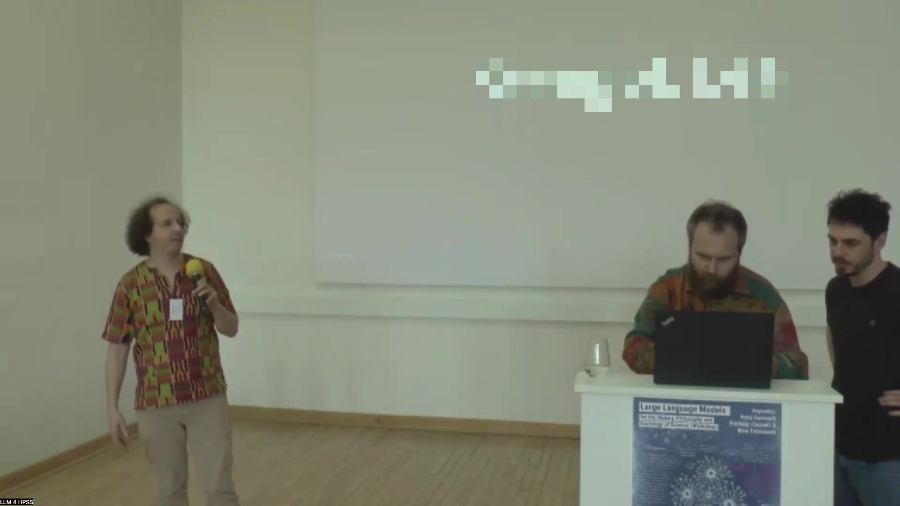
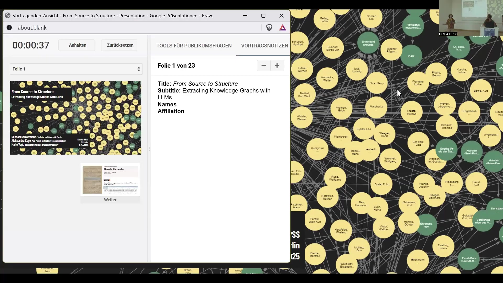
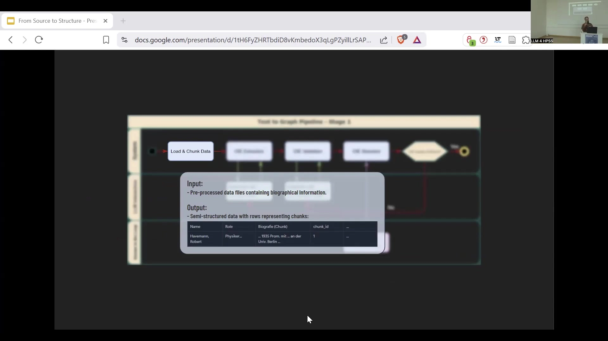

18 From Source to Structure – Extracting Knowledge Graphs with LLMs
Overview
In their presentation, From Source to Structure – Extracting Knowledge Graphs with LLMs, Raphael Schlattmann and his colleagues detail a comprehensive methodology for transforming unstructured biographical data into structured knowledge graphs. Their primary objective is to move beyond isolated biographical entries towards enabling complex structural queries, particularly within the History, Philosophy, and Sociology of Science (HPSS) domain.
The authors have engineered a two-stage pipeline. Initially, an ontology-agnostic Open Information Extraction (OIE) process extracts raw triples from pre-processed biographical texts. This is followed by an ontology-driven stage for constructing the Knowledge Graph (KG). The pipeline integrates Large Language Model (LLM) interaction for extraction and generation calls, whilst crucially incorporating a ‘Human-in-the-Loop’ approach for manual correction and validation at critical junctures.
This work is guided by core principles of research-driven ontology creation, transparency, task decomposition, and modularity, ensuring the system’s adaptability and verifiability. The project leverages biographical handbooks such as Wer war wer in der DDR? and Zieliński’s compilations as its primary data sources. The resulting knowledge graphs facilitate advanced social network analysis and enable quantitative analysis of biographical attributes, such as the correlation between state awards and political standing within the German Democratic Republic. Future ambitions include fine-tuning the system for specific use cases, exploring GraphRAG for natural language querying, and constructing multilayered networks for deeper structural analysis.
18.1 LLMs in the History, Philosophy, and Sociology of Science
This initial segment introduces the overarching theme: the application of Large Language Models within the History, Philosophy, and Sociology of Science (HPSS). The session, clearly identified by the label ‘LLM 4 HPSS’, signals a specific interdisciplinary focus.

18.2 Biographical Data and Structure
The authors utilise diverse biographical databases as foundational data sources, exemplified by the handbook Wer war wer in der DDR? (Who was who in the GDR?). This resource provides detailed entries, such as that for Alexander Abusch, a former Minister for Culture, born in Krakow in 1902 and deceased in 1982.
His biography meticulously documents his early life, including his Jewish heritage, his parents’ varied professions, and his upbringing in Nuremberg-Gostenhof from 1902. It further outlines his merchant training, his employment in Nuremberg, and his early political affiliations with the Free Socialist Youth in 1918 and the Communist Party of Germany (KPD) in 1919. Abusch’s involvement in revolutionary struggles is noted, alongside his journalistic career, where he adopted the pseudonym ‘Ernst Reinhardt’. His biography also records legal troubles concerning ‘revelations about secret armaments’, his subsequent flight, and his work for the Neue Ztg. in Jena from 1923.

Beyond German sources, the system integrates Polish biographical and bibliographical entries. These include details on individuals such as Henryk Bartsch—a Protestant priest born in 1832 who extensively travelled and authored travelogues—and Franciszek Baturewicz, a literary figure, sociologist, and linguist born in 1888. These Polish entries reference sources like Bibl. Warszawskiej (Warsaw Library) and Wielka Encyklopedja (Great Encyclopedia). An Anhören (Listen) button suggests an integrated audio feature, enhancing accessibility.
18.3 Transforming Text into Knowledge Graphs
The authors developed an extraction pipeline to transform diverse textual statements into a structured knowledge graph representation. This process begins with biographical text chunks, which serve as the input. Examples include Polish snippets detailing travel to Italy, Greece, the Holy Land, and Egypt, or membership in the P. E. N. Club. German excerpts also feature, such as affiliations with the KPD-PV from 1948 to 1951.
The pipeline systematically processes these textual inputs, yielding a knowledge graph of entities (nodes) and relationships (labelled edges). For instance, the system extracts ‘Henryk, Bartsch’ as an entity, establishing relationships such as member_of ‘P. E. N. Klubu’ and traveled_to various locations including Włoszech (Italy) and Grecji (Greece). This structured output facilitates semantic querying and a comprehensive analysis of the biographical data.
18.4 A Two-Stage Construction Pipeline
The knowledge graph construction pipeline operates in two distinct stages, ensuring both broad information extraction and structured, ontology-driven graph building.
The initial phase, ‘Ontology agnostic Open Information Extraction (OIE)’, commences with loading and chunking data, followed by OIE extraction and validation. During this stage, an LLM performs an ‘Extraction Call’ to generate raw triples. A critical decision point ensures quality; should the triples not meet the standard, a ‘Human in the Loop’ intervenes for manual correction, focusing on information extraction without a predefined schema.
Subsequently, the ‘Ontology driven Knowledge Graph (KG) building’ stage involves defining ‘Competency Questions’, creating the ‘Ontology’, and establishing schema definitions. The authors again leverage an LLM for a ‘Generation Call’ related to these components. Further steps include ontology mapping, disambiguation, and Wikipedia information retrieval. The pipeline then employs ‘RDF Star & SHACL Validation’ for graph representation and schema adherence, with another quality gate ensuring the final knowledge graph meets predefined criteria through potential human intervention.
18.5 Core Principles of Development
The team’s development methodology adheres to five fundamental principles, ensuring both rigour and adaptability.
Research-Driven & Data-Oriented: Ontology development is intrinsically guided by specific research questions and the inherent characteristics of the available data. This ensures the resulting knowledge structure remains pertinent and practical.
Human-in-the-Loop: The authors advocate for a hybrid approach, combining the efficiency of LLM automation with essential expert oversight. Manual checks are integrated at all critical stages to achieve high quality with manageable human effort.
Transparency: Every step within the pipeline is designed to be verifiable at all relevant points, fostering clarity, auditability, and trust in the entire process.
Task Decomposition: The complex process is broken down into smaller, sequential, and individually verifiable steps. Performing Open Information Extraction before Ontology alignment exemplifies this structured, phased approach.
Modularity: The system is designed to facilitate the easy swapping of components. This allows for the seamless integration of improved models or alternative validation tools as technology evolves, ensuring the system remains flexible and adaptable.
18.6 Data Loading and Chunking
The initial phase of the pipeline, designated as Stage 1, focuses on the crucial process of loading and chunking data. This stage accepts pre-processed data files containing biographical information and transforms this input into semi-structured data where rows represent individual chunks.
The output is organised into a table with four columns: ‘Name’, ‘Role’, ‘Biografie (Chunk)’, and ‘chunk_id’. For example, ‘Havemann, Robert’ is listed under ‘Name’, his ‘Role’ is identified as ‘Physiker…’ (Physicist), and a biographical snippet populates the ‘Biografie (Chunk)’ column. A unique ‘chunk_id’ is assigned to each entry. This stage is instrumental in segmenting unstructured text into manageable units, preparing the data for subsequent extraction.
18.7 Quality Assessment and Refinement
Stage 3 of the pipeline is dedicated to the rigorous quality assessment and refinement of extracted information. This iterative process commences with loading and cleaning the data, followed by Open Information Extraction (OIE) and its validation. The output is then compared against an established ‘OIE Standard’.
A key decision point, ‘OIE Quality Sufficient?’, determines the pipeline’s progression. If the extracted information fails to meet the predefined criteria, the system enters a feedback loop for ‘Manual Correction of a sample of Triples’. This human intervention refines the data before it cycles back for re-evaluation. The inputs for this stage comprise validated triples and a ‘Gold Standard’—a manually verified sample serving as ground truth. The output consists of standard quality metrics, namely F1 score, Precision, and Recall, which quantitatively measure the extraction process’s accuracy.
18.9 Case Study: The Wer war wer in der DDR? Lexicon
The biographical lexicon Wer war wer in der DDR? Ein Lexikon ostdeutscher Biographien serves as a critical resource for this research. Initially published in the 1990s and digitised in the 2000s, this handbook is a key reference for understanding prominent East German figures, containing approximately 4,000 comprehensive entries.
Two examples highlight the diversity of documented lives. Gustav Hertz, a physicist, earned a Nobel Prize in 1925 for work that significantly contributed to quantum theory. His career also included involvement in the Soviet atomic bomb project before he became a professor at Karl Marx University Leipzig. Conversely, Robert Havemann, a physical chemist and prominent dissident, was a co-founder of the anti-fascist resistance group Europäische Union. After the war, he became a significant system critic within the GDR, gaining recognition for his Marxist critique of political conditions and academic suppression, particularly through his lecture series Dialektik ohne Dogma.
18.10 DDR Awards and Political Standing
Analysis of the biographical data reveals a strong correlation between the receipt of prestigious DDR state awards and an individual’s political affiliation and career progression. A bubble chart visually represents this relationship, mapping SED affiliation against the rate of holding high-level positions for various awards.
The ‘Held der DDR’ and ‘Karl-Marx-Orden’ awards demonstrate a very high association with both SED affiliation and holding significant positions. Other awards, such as the ‘Banner der Arbeit’, also indicate high SED affiliation. Conversely, the ‘Nationalpreis der DDR’ and the ‘No Award’ category exhibit notably lower rates for both metrics.
Detailed data further elucidates these trends. A comparison of 20 Karl-Marx-Orden recipients against 1,056 non-recipients shows a significant disparity in SED membership: 95.0% versus 50.5%. Furthermore, 55.0% of recipients held high positions, compared to only 28.0% of those without an award. A granular breakdown reveals that Karl-Marx-Orden recipients were significantly more likely to be Politbüro members, ministers, or hold other senior roles. This analysis clearly illustrates that receiving prestigious state awards in the DDR was strongly linked to high-level political engagement within the ruling party structure.
18.11 Conclusion and Future Directions
The overarching aim of this research is to move ‘From isolated biographical entries to structural queries’, thereby enabling more profound and interconnected analyses of historical data. Current challenges remain, particularly in enhancing entity disambiguation and refining benchmarking processes to ensure greater accuracy.
Looking ahead, the immediate next steps focus on finalising the existing pipeline. This includes systematically comparing results against other established packages and scaling the system to process full datasets. Long-term goals are ambitious, encompassing the fine-tuning of the system for specific use cases and exploring ‘GraphRAG’ for advanced natural language querying. Ultimately, the project aspires to build multilayered networks to facilitate deeper structural analysis, offering novel insights into complex historical relationships.

18.8 Social Network Analysis of Biographical Compilations
The extracted knowledge graphs facilitate sophisticated social network analysis, as demonstrated by a network derived from Zieliński’s compilations. This substantial dataset comprises 3,598 nodes and 5,443 edges, representing a complex web of interconnected individuals.
In the visual representation, nodes denote individuals and edges signify relationships inferred from the source material. A key analytical distinction categorises individuals into ‘Editors’, who are highlighted, and ‘Everyone else’. The visibility of numerous names, including Józef Piłsudski, Adam Mickiewicz, and Joachim Lelewel, illustrates the dataset’s breadth. The observed clustering of nodes and the density of connections suggest the presence of distinct communities, offering valuable insights into the documented social structures.